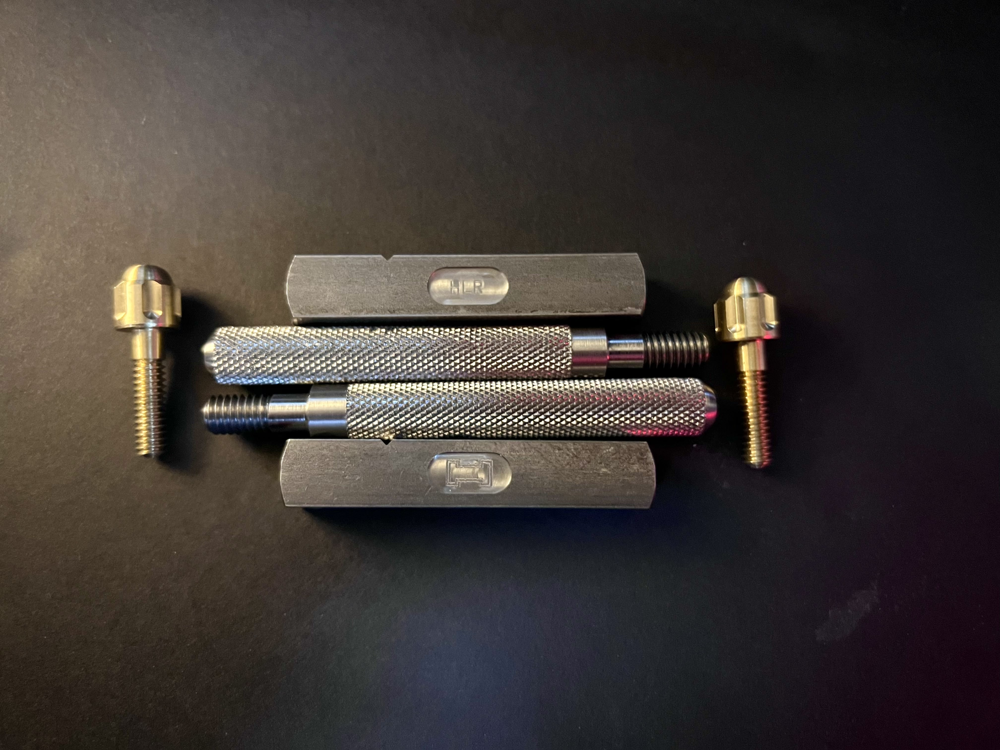
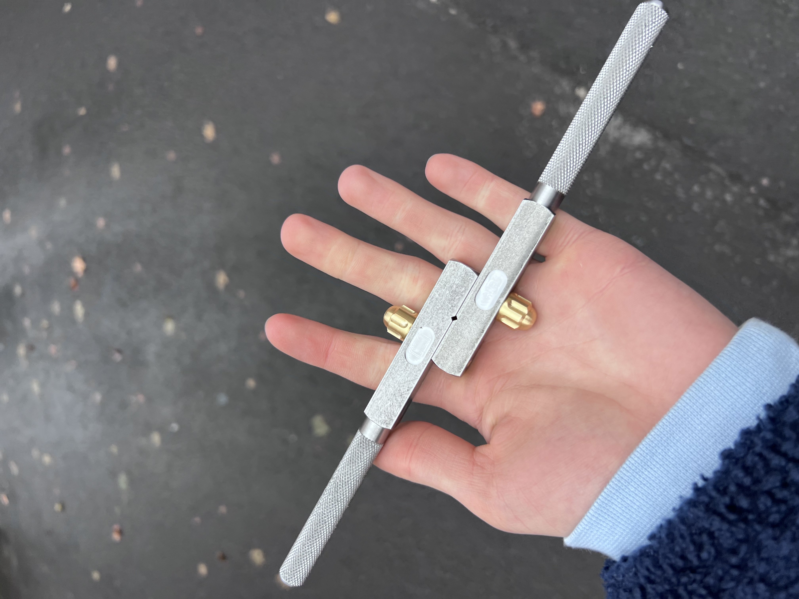
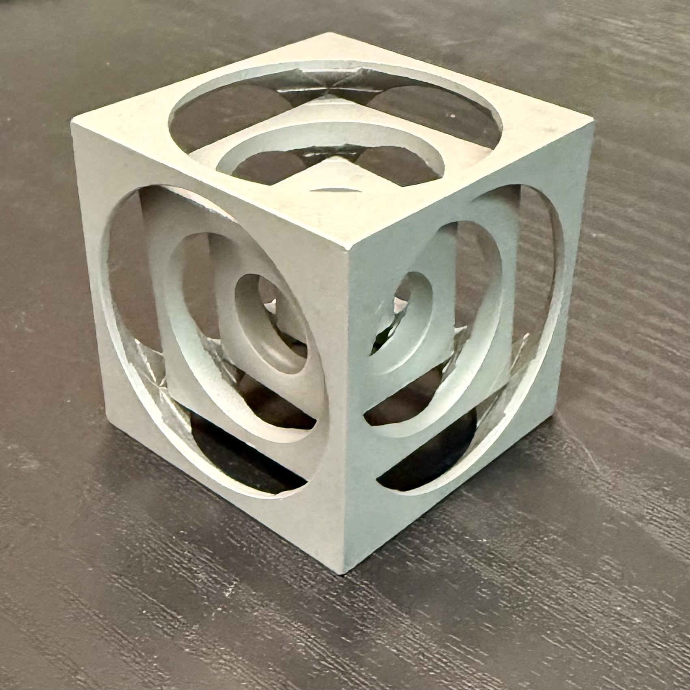
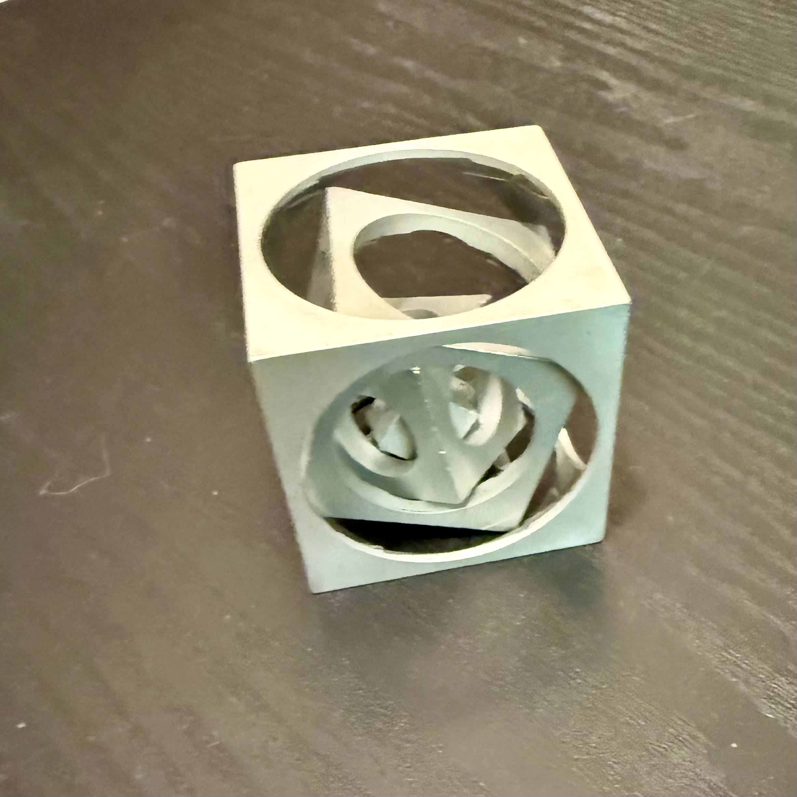
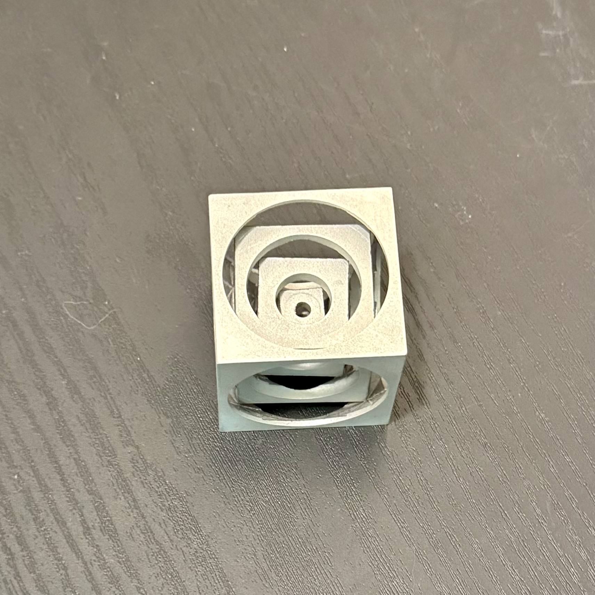

Project One · Manual Lathe
Custom Tap Wrench
The tap wrench was machined entirely on a manual lathe from raw bar stock. The project required turning the body to a precise outer diameter, boring the internal tap socket to a close tolerance, cutting external threads by hand on the lathe, and parting the T-handle from the same stock — all without CNC assistance. Every cut was controlled manually: feed rate, depth of cut, and tool path were set by hand.
The challenge of a tap wrench is that multiple features have to align: the socket bore has to be on-center with the body, the threads have to be clean enough to engage correctly, and the finished part has to be symmetric enough to turn smoothly under hand pressure. Lathe work teaches that precision comes from process control, not correction after the fact — if the setup is wrong, the part is wrong.



Project Two · CNC Mill
Nested Cube
The nested cube is a classic machining demonstration: a series of concentric cubes carved from a single billet of aluminum on a CNC mill, each inner cube free to rotate inside the one surrounding it. What makes it challenging is that once material is removed, there's no correcting it — the machining sequence has to be planned so that inner features are cut before the surrounding material is removed, and every inside corner has to be cleared to spec before the next cube is freed.
The project required writing G-code for each operation, setting work offsets, and managing tool changes between the roughing and finishing passes. The final result is a single piece with three independently articulating cubes — no assembly, no fasteners, milled from one block.


